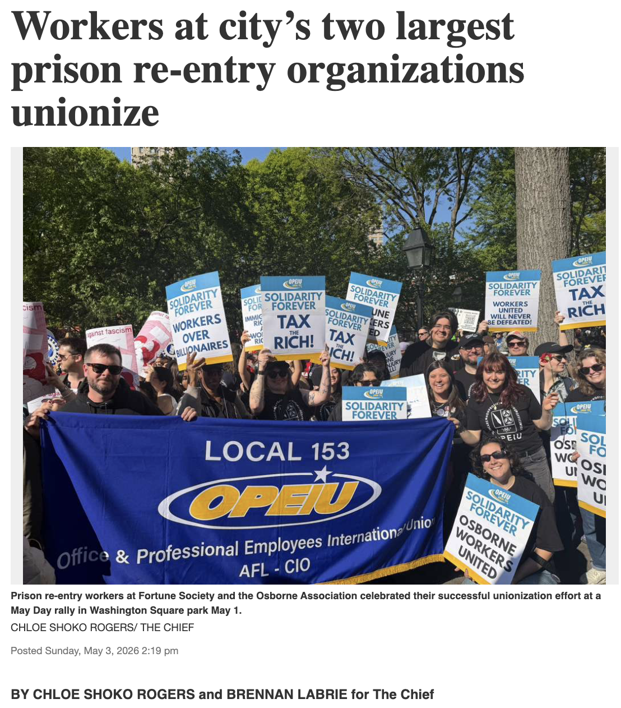
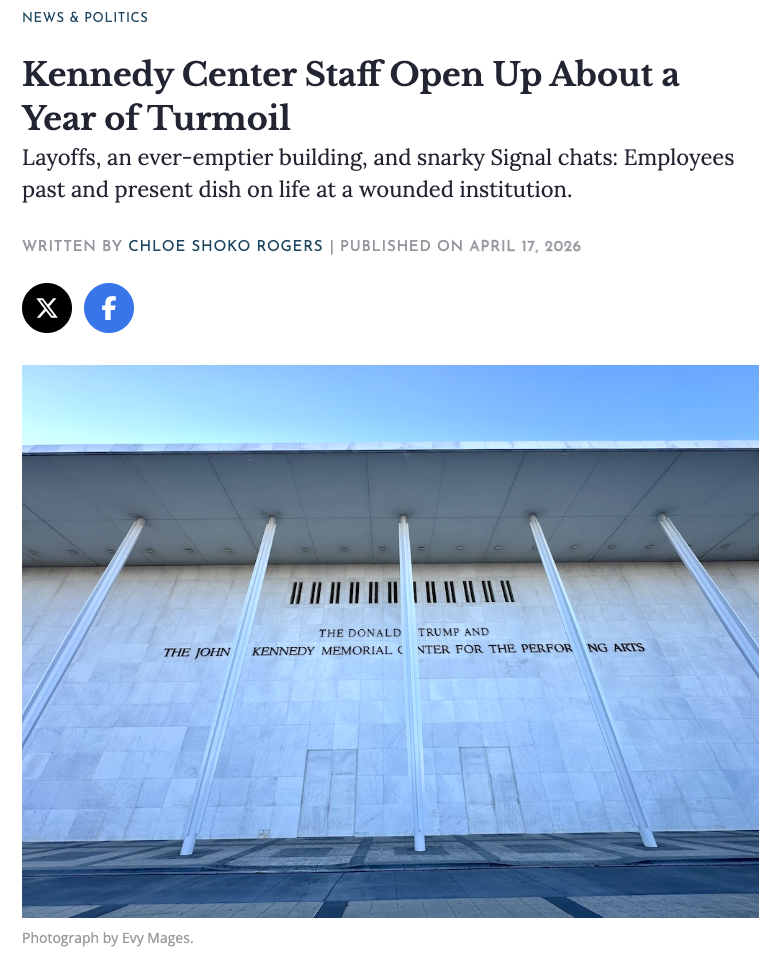

-

Workers at city’s two largest prison re-entry organizations unionize The Chief May 2026 -

Kennedy Center Staff Open Up About a Year of Turmoil Washingtonian April 2026
- Police officers joined a West Harlem high school class for theater workshops December 2025 NYCity News Service
- Mayor-elect Mamdani signals the city will keep mandatory composting December 2025 NYCity News Service
- West Harlem board rejects 1727 Amsterdam plan amid exclusion, affordability fears November 2025 NYCity News Service